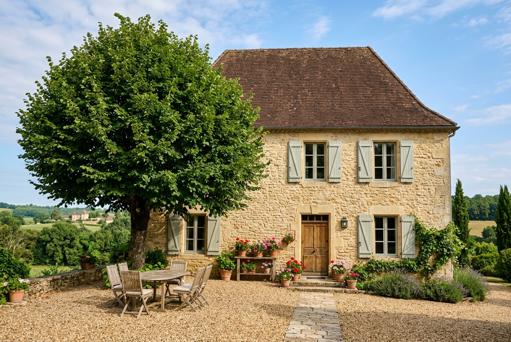
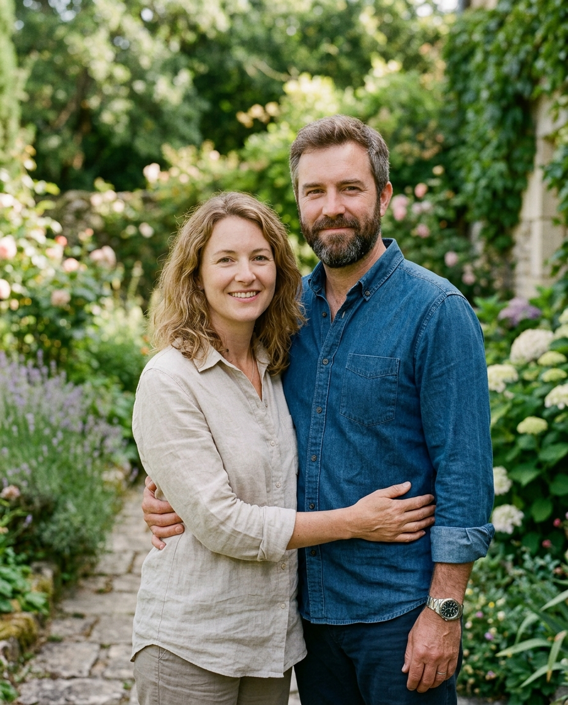
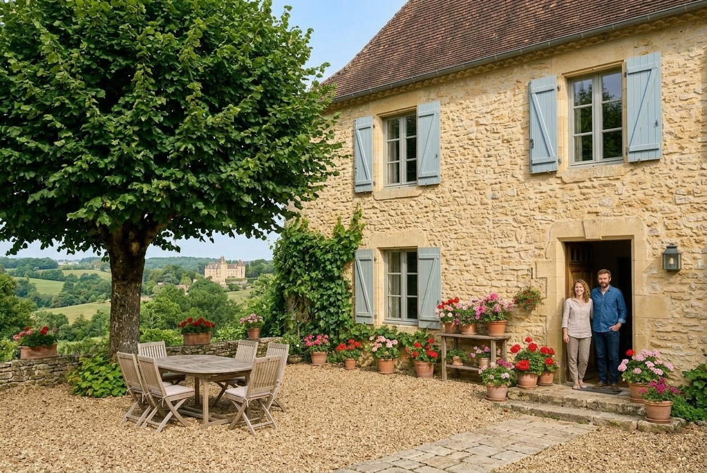
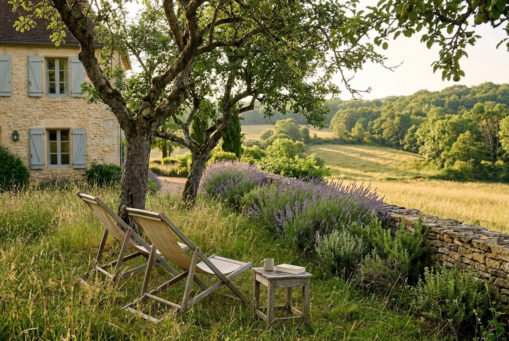
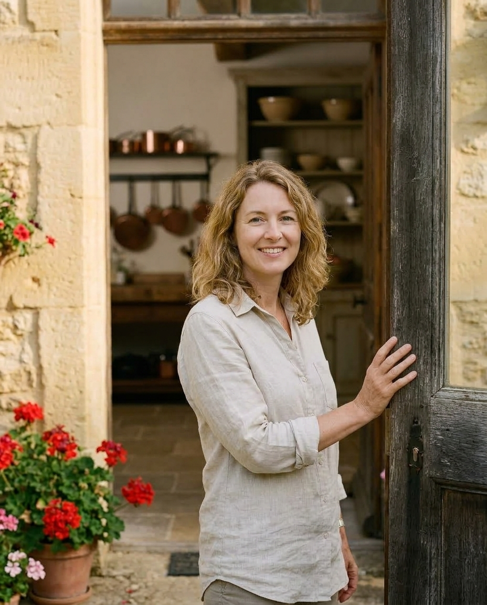

Chambres d’hôtes à Bourdeilles, à 8 km de Brantôme
Le Tilleul
Bienvenue chez nous.
- À partir de 85 € la nuit, petit-déjeuner compris
- 4 chambres de 2 à 4 personnes
- 4,9/5 · 64 avis Google

« Nous avons restauré cette ferme pour vous y recevoir. Venez prendre le petit-déjeuner sous le tilleul. »
Claire et Marc
« Venez prendre le petit-déjeuner sous le tilleul. »
Claire et Marc, vos hôtes
On vous attend.

Qui vous accueille
Nous sommes Claire et Marc
Le Tilleul était la ferme des grands-parents de Marc. Nous l’avons restaurée pendant trois ans, pierre après pierre, et nous y vivons toute l’année. Claire prépare le petit-déjeuner avec les confitures du verger, Marc connaît chaque chemin jusqu’à la Dronne. Vous êtes chez vous dans votre chambre, et nous ne sommes jamais loin.
Nous parlons français, anglais et espagnol. Suivez notre quotidien sur Instagram
Ce que nous partageons
Le matin sous le tilleul, le soir à notre table.

Le matin, on se retrouve sous le tilleul.
Le pain de Bourdeilles, nos confitures de prunes et de figues, le miel du voisin, les œufs de nos poules et les fruits du verger.
8 h – 10 hcompris dans la nuit
« Les confitures, c’est moi. Le pain, c’est la boulangère : elle ouvre à 7 h. »Claire
Trois soirs par semaine, on dîne ensemble.
Claire cuisine ce que le jardin et le marché de Brantôme donnent ce jour-là, Marc s’occupe du vin.
19 h 30lun., mer. et ven. · 32 € · vin compris
Réservée à nos hôtes, à une seule table, avec un menu unique.
Il suffit de nous le demander.
- Un panier pique-nique12 €
- Des vélosoffert
- Nos cartes de randonnéeoffert
- La navette vers la garesur demande
Les chambres
Quatre chambres sous les toits de la ferme, chacune avec sa salle d’eau.
Nous avons voulu garder à chaque chambre son caractère : les poutres, les fenêtres sur la cour ou sur les prés, et le calme de la ferme.
-
La Cour
« Celle du tilleul : on l’entend bruisser le matin. »
85 € la nuit · pour 2 · Voir la chambre La Cour
-
Les Prés
« La plus calme, avec la vue sur la rivière. »
95 € la nuit · pour 2 · Voir la chambre Les Prés
-
Le Fournil
« Pour une famille, de plain-pied sur la cour. »
120 € la nuit · jusqu’à 4 · Voir la chambre Le Fournil
-
Le Grenier
« Les enfants adorent la mezzanine. »
135 € la nuit · jusqu’à 4 · Voir la chambre Le Grenier
Réunion de famille, séminaire, mariage ? Groupes et maison entière

Autour de chez nous
Le jardin, le calme, et nos adresses.
Le grand jardin se partage, chaque chambre a sa chaise longue sous les fruitiers, et une fois la nuit tombée, le silence est complet. Pour le reste, voici où nous allons nous-mêmes.
Pour bien manger
Le Moulin de l’Abbaye
Brantôme · 8 km
« Leur terrasse sur la Dronne, le midi en semaine. » Marc
La ferme du Bouyssou
Bourdeilles · 4 km
« Le fromage de chèvre, à prendre le samedi. » Claire
Pour marcher
Le sentier des falaises
au bout du chemin · à pied
« Partez tôt, avant la chaleur. » Marc
Les bords de la Dronne
1,5 km
« Il y a un gué où l’on peut se baigner. » Claire
Pour chiner
Le marché de Brantôme
le vendredi matin · 8 km
« Garez-vous près de l’abbaye. » Claire
La brocante de Périgueux
1er dimanche du mois · 27 km
« Pour les vieilles confiturières en cuivre. » Claire
Ce qu’en disent nos hôtes
Nos hôtes en parlent mieux que nous.
4,9 sur 5
64 avis Google
relevé en septembre 2026 · Voir les avis
Gîtes de France 4,8 sur 5 · 41 avis · Voir les avis
Les avis laissés directement à Claire et Marc
On se sent attendus dès la cour. Claire nous a gardé le petit-déjeuner jusqu’à 11 h le dimanche, et Marc nous a dessiné le chemin des falaises sur un coin de nappe.
Les enfants ont nourri les poules tous les matins. La table d’hôtes du mercredi reste notre meilleur repas de l’été.
Une chambre simple et belle, un silence complet la nuit, et des hôtes qui savent se rendre présents sans jamais peser.
Nous sommes venus pour deux nuits, nous sommes restés cinq. La brocante de Périgueux, sur le conseil de Claire, valait le détour.
Parfait pour une semaine de télétravail au calme : bon wifi, un bureau sous la fenêtre, et des confitures qu’on ne trouve nulle part.
Recueillis par nous auprès de nos hôtes après leur séjour, publiés avec leur accord, sans contrepartie, du plus récent au plus ancien.
- Gîtes de France · 3 épis · depuis 2021
- Accueil Vélo · depuis 2024
« Cinq chambres d’hôtes où l’on dîne avec les propriétaires », Le Journal du Périgord, mai 2026
Réserver
Votre séjour commence ici.
Vous réservez directement auprès de nous, sans intermédiaire et sans commission.
Les dates libres
2 nuits minimum · petit-déjeuner compris · vous venez à plusieurs ? choisissez plusieurs chambres
libredéjà réservépassévos dates
Vérifié il y a 12 min
Comment ça se passe
-
Vous nous dites ce que vous cherchez
Dates, nombre de voyageurs, envies particulières.
-
Nous vous répondons
Disponibilité confirmée et prix pour vos dates précises.
-
Vous prenez le temps qu’il vous faut
Posez d’autres questions, demandez des précisions.
-
Rien à payer tout de suite
Aucune carte bancaire à saisir, le règlement vient plus tard, avec nous.
Comment souhaitez-vous nous parler ?
Votre demande de séjour
Laissez-nous un message, nous vous répondons sous 24 heures.

Une question ?
05 53 00 00 00Appelez-nous, nous répondons avec plaisir.
Nous avons bien reçu votre message.
Nous vous répondons sous 24 heures, à l’adresse que vous venez de donner. Ce n’est pas encore une réservation : nous vérifions d’abord que tout est libre à vos dates.
Pensez à regarder vos indésirables : la première réponse s’y range parfois.
Une question d’ici là ? Écrivez-nous, ou appelez le 05 53 00 00 00.
Offrir un séjour ? Nos cartes cadeaux
Pratique
Bon à savoir avant de venir.
Arrivée et départ Arrivée de 17 h à 20 h, départ avant 11 h
Animaux Les chiens sont les bienvenus, 10 € la nuit
Ouverture D’avril à octobre
Paiement Virement, chèques-vacances, espèces
Accès À 8 km de Brantôme, gare de Périgueux à 30 km
Parking et wifi Parking dans la cour, wifi dans chaque chambre
Vos questions
Oui, prévenez-nous la veille : nous laissons la clé de votre chambre dans la boîte près de la porte, et nous vous faisons visiter le lendemain matin.
Nous avons une liste de visites à l’abri : les grottes de Villars, l’abbaye de Brantôme, le musée du Périgord à Périgueux. Et la bibliothèque du salon est à vous.
Avec plaisir, jusqu’à douze personnes hébergées chez nous. Dites-le-nous en réservant, Claire prévoit un gâteau.
Oui, à notre nom, avec le vôtre en complément. Nous le gardons jusqu’à votre venue.